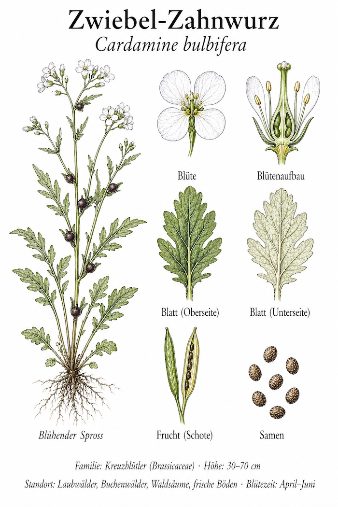
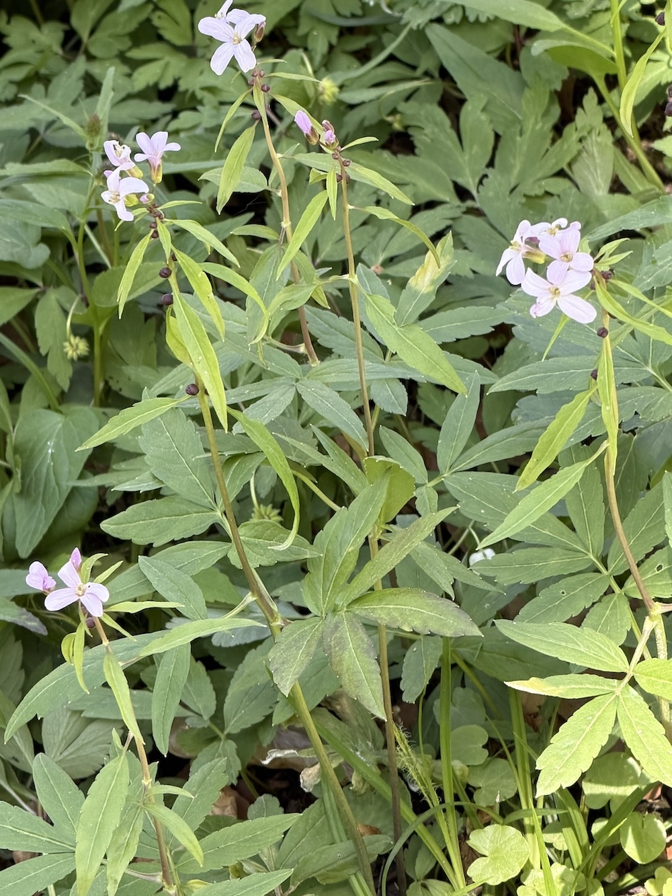
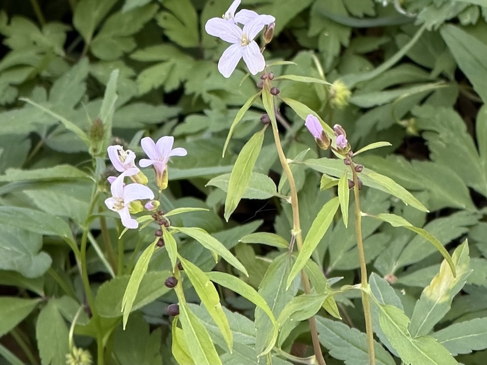
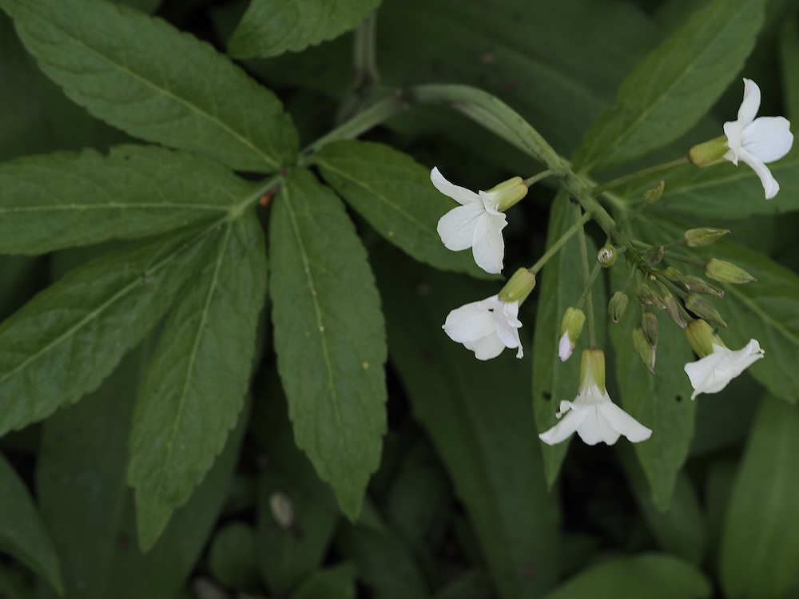

Bulbillen statt Samen
Die Zwiebel-Zahnwurz hat eine Eigenart, die sie von fast allen anderen Wildpflanzen unterscheidet: In den Blattachseln bildet sie kleine, schwarz-violette Brutzwiebeln (sogenannte Bulbillen). Wenn diese reif sind, fallen sie ab und keimen direkt am Boden — die Pflanze klont sich also selbst, ohne den Umweg über Samen. Das ist effizient, aber genetisch riskant: Die Pflanze ist gegen neue Krankheiten weniger flexibel.
Bärlauch-Konkurrenz mit Stil
Wer im April durch einen Buchenwald geht und plötzlich eine elegante, hellrosa Kreuzblütler-Blüte über vielfach gefiederten Blättern entdeckt, hat meist die Zwiebel-Zahnwurz vor sich. Sie wächst oft inmitten von Bärlauch-Beständen — beide lieben kalkhaltige, humose Böden. Der Geruch beim Anschneiden: leicht meerrettichartig, wie viele Kreuzblütler.